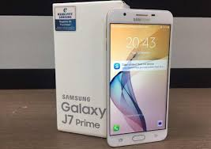
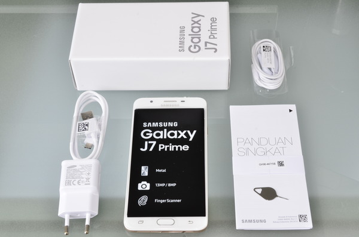

Menjelang akhir tahun 2016 lalu, Samsung membawa lini smartphone Galaxy J Prime mereka ke Indonesia. Saat itu, Samsung mengumumkan bahwa mereka akan menawarkan tiga tipe smartphone Galaxy J Prime untuk Indonesia, yaitu J2 Prime, J5 Prime, dan J7 Prime. Kini, salah satu smartphone di antara tiga Galaxy J Prime itu hadir di lab. pengujian kami, yaitu Galaxy J7 Prime.
Desain Smartphone Galaxy J7 Prime ini hadir dengan mengusung desain yang mirip sekali dengan beberapa smartphone kelas menengah Samsung yang lain. Samsung tampaknya memang telah memiliki desain dasar yang baku untuk produk mereka di kelas ini, terutama untuk desain sisi depan. Hal itu bisa saja membuat beberapa orang akan cukup sulit membedakan smartphone ini dari deretan smartphone kelas menengah Samsung yang lain. Galaxy J7 Prime ini hadir sebagai smartphone dengan desain unibody, yang berarti tidak memiliki penutup belakang yang bisa dibuka dan pengguna tidak bisa melepas baterai perangkat ini. Secara umum, bodi dari smartphone ini terbilang kokoh. Sayangnya, bahan yang dipilih Samsung untuk bodi dari smartphone ini membuatnya terasa agak licin saat dipegang.
Bodi dari Galaxy J7 Prime ini memiliki dimensi keseluruhan sekitar 152 x 75 x 8 mm. Dimensi itu bisa dikatakan tidak terlalu besar untuk sebuah smartphone dengan layar 5.5″, tetapi tetap terasa tebal. Smartphone ini menawarkan layar dengan rasio mencapai 73% dari sisi depan perangkat.
Tampaknya sudah menjadi kebiasaan bagi Samsung untuk tidak meletakkan tombol power dan volume up/down di sisi yang sama dari smartphone mereka. Galaxy J7 Prime ini pun juga hadir dengan mengusung desain tersebut. Tombol power ditempatkan Samsung di sisi kanan perangkat, sementara tombol volume up/down terpisah ditempatkan di sisi kiri. Di sisi kini ini juga terdapat dua slot untuk tray SIM Card. Tray pertama bisa menampung Micro SIM #2 dan Micro SD, sementara tray kedua dapat menampung Micro SIM #1. Kapasitas Micro SD yang bisa digunakan di smartphone ini mencapai 256 GB. Smartphone ini juga dilengkapi konektor audio 3.5 mm dan port Micro USB yang ditempatkan di sisi bawah perangkat. Beralih ke sisi belakang, Samsung hanya menempatkan kamera dan LED flash di sisi ini. Secara fisik, tidak ada hal menarik lain yang bisa dibahas dari smartphone yang satu ini.
SpesifikasiSamsung melengkapi smartphone ini dengan layar 5.5″ yang mendukung resolusi Full HD (1920 x 1080 piksel). Sayangnya, Samsung hanya menawarkan layar PLS TFT untuk smartphone ini. Ini tentu saja sedikit disayangkan, mengingat varian non-“Prime” dari smartphone ini, Galaxy J7, sudah hadir dengan layar Super AMOLED yang menawarkan kualitas tampilan yang jauh lebih baik. Walaupun mengusung nama “Prime”, smartphone ini ternyata tidak dibekali dengan SoC yang berbeda dari saudaranya, Galaxy J7. SoC yang digunakan adalah besutan Samsung sendiri, yaitu Exynos 7870 yang hadir dengan prosesor octa-core Cortex A53 dengan kecepatan 1.6 GHz. Sementara untuk GPU, SoC tersebut menawarkan Mali-T830 MP2. Exynos 7870 ini sepintas menawarkan spesifikasi yang cukup baik untuk kelas menengah. Namun, seperti apa perbandingan performa yang ditawarkannya di antara smartphone kelas menengah di kisaran harga yang sama yang lain? Kami akan menjawabnya lewat uji performa di bagian selanjutnya.
Samsung membekali smartphone ini dengan RAM 3 GB dan storage internal 32 GB. Kapasitas RAM 3 GB saat ini memang bisa dikatakan sebagai kapasitas minimal yang harus ditawarkan produsen smartphone di kelas yang dihuni Galaxy J7 Prime ini. Sementara untuk storage internal 32 GB, bila pengguna merasa kapasitas itu masih kurang, Micro SD bisa ditambahkan untuk menyimpan data-data di smartphone ini. Micro SD di smartphone ini tidak harus berbagi slot dengan SIM Card karena Samsung menyediakan slot terpisah untuk SIM #1, SIM #2, dan Micro SD.
Kamera utama di Galaxy J7 Prime menggunakan sensor 13 MP dengan lensa f/1.9 serta fitur autofocus dan LED Flash. Sementara untuk kamera selfie, Samsung menawarkan sensor 8 MP dengan lensa f/1.9. Untuk video, smartphone ini hanya menawarkan perekaman video maksimal 1080p di 30 fps. Keterbatasan dari SoC yang digunakan tampaknya membuat Samsung belum bisa menawarkan perekaman video 4K di Galaxy J7 Prime ini. Baterai di smartphone ini mengusung rating kapasitas 3300 mAh, sama dengan yang digunakan di Galaxy J7 Prime. Mengingat SoC yang digunakan smartphone ini sudah menggunakan fabrikasi 14 nm, kapasitas baterai ini seharusnya menjanjikan waktu penggunaan yang cukup panjang. Kami akan membuktikan hal itu dengan melakukan pengujian baterai. Satu hal yang cukup disayangkan dari smartphone ini adalah Samsung tidak melengkapinya dengan jajaran sensor yang lengkap. Selain fingerprint scanner, smartphone ini hanya dibekali dengan accelerometer dan proximity sensor. Hal ini tentu saja bisa dikatakan masih kurang untuk sebuah smartphone kelas menengah di kelas harga yang diusung Galaxy J7 Prime Galaxy J7 Prime ini dibekali dengan dukungan untuk WiFi 802.11 b/g/n dan Bluetooth 4.1. Sayang sekali, belum ada dukungan untuk WiFi 5 GHz. Sementara untuk koneksi seluler, smartphone ini mendukung GSM, 2G, 3G, dan 4G (FDD LTE & TDD LTE). Jaringan 4G yang didukung oleh smartphone ini adalah B1, B3, B5, B7, B8, B20, B36, dan B40, yang berarti smartphone ini mendukung penggunaan 4G LTE dari semua operator seluler di Indonesia. Sistem operasi yang digunakan oleh smartphone ini adalah Android Marshmallow (v6.0.1). Sejauh ini, belum ada informasi dari Samsung terkait kemungkinan update ke Android Nougat. UI yang digunakan tentu saja adalah UI khas dari Samsung, dengan berbagai aplikasi bawaan yang menjadi ciri khas perusahaan asal Korea Selatan itu.
Paket Penjualan * Kabel USB Type A to Micro A * Adapter daya * Headset * Pin (untuk membuka tray SIM Card) * Beberapa lembar dokumen